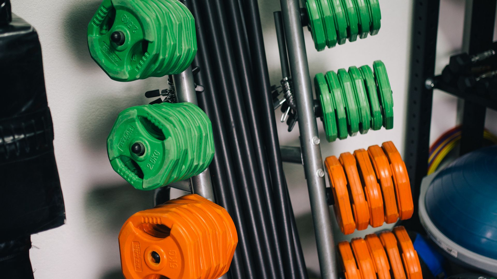
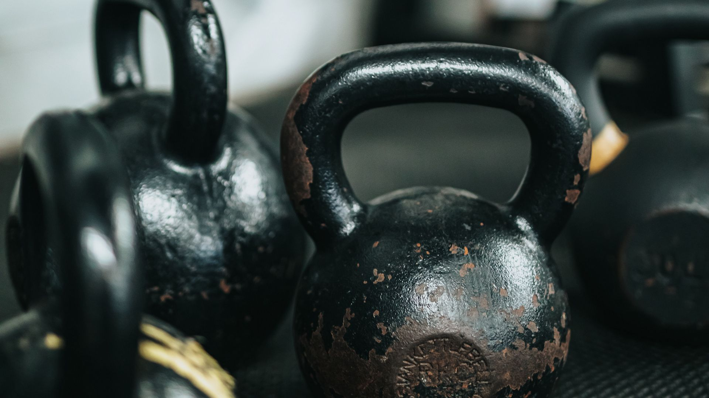

Что у нас есть
Блины
Блины или диски – это часть штанги, которая позволяет менять вес снаряда. Стандартный вес грифа для штанги составляет 10, 15 и 20 кг, когда вам требуется больше – вы используете утяжелители, монтируемые по краям грифа. Есть у блинов и другое важное назначение. Отработка многих силовых элементов требует использования блинов, поскольку они держат гриф на необходимом уровне, когда штанга находится на полу. В нашем ассортименте имеются самые разные, от 1 кг. до 50 кг.

Гантели
Гантели — спортивные снаряды для выполнения физических упражнений с отягощениями, направленных на развитие мышц, укрепление суставов и общей работоспособности организма. Как правило, классические цельнолитые гантели имеют форму двух шаров, соединенных посередине рукояткой для захвата рукой. В настоящее время встречаются цельнолитые гантели имеющие форму шестигранных призм, соединенных ручкой, и часто обрезинены. Такая форма делает возможной постановку тяжелой гантели торцом на переднюю поверхность бедра в подготовительной фазе такого упражнения, как «жим гантелей на горизонтальной скамье», что невозможно выполнить с гантелью классической формы при использовании тяжелых весов. Шестигранная форма не даёт гантели раскатываться по полу. В нашем ассортименте имеются самые разные, от 1 кг. до 30 кг.
